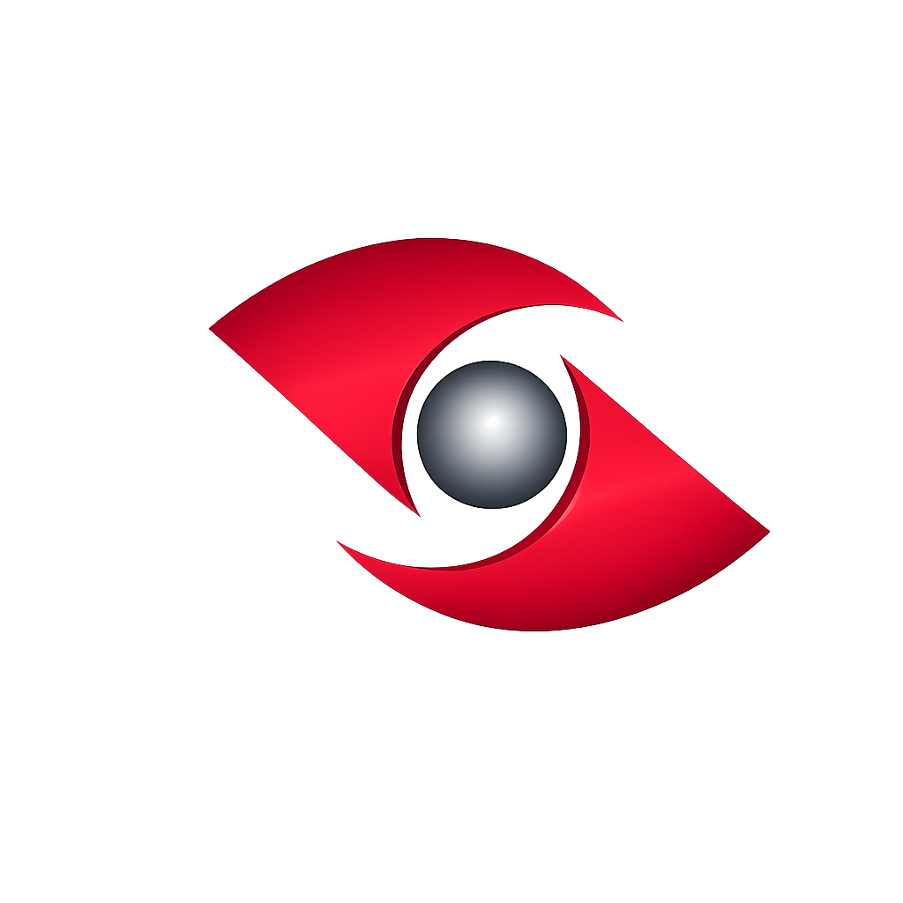

<!-- Mobile backdrop -->
<div class="ibs-backdrop d-lg-none"
     [class.show]="mobileSidebarOpen()"
     (click)="closeMobileSidebar()"></div>

<div class="ibs-shell">

  <!-- SIDEBAR -->
  <aside class="ibs-sidebar"
       [class.collapsed]="sidebarCollapsed()"
       [class.mobile-open]="mobileSidebarOpen()"
       [class.pinned]="sidebarPinned()"
       (mouseenter)="onSidebarEnter()"
       (mouseleave)="onSidebarLeave()">

    <!-- Top -->
    <div class="ibs-sidebar-top">

      <!-- Mobile close (SOLO cuando está abierto en mobile) -->
      @if (mobileSidebarOpen()) {
        <button class="btn btn-sm btn-outline-secondary d-lg-none"
                type="button"
                (click)="closeMobileSidebar()"
                aria-label="Close sidebar">
          <i class="bi bi-x-lg"></i>
        </button>
      }

      <!-- Brand -->
      <div class="ibs-brand" [class.compact]="sidebarCollapsed()">

        <!-- Logo siempre visible (clic abre si está colapsado) -->
        <button type="button"
                class="ibs-brand-logo-btn"
                (click)="sidebarCollapsed() ? toggleSidebar() : null"
                [attr.title]="sidebarCollapsed() ? 'Abrir menú' : 'IB Systems'"
                aria-label="IB Systems">
          <span class="ibs-brand-logo">
            
          </span>
        </button>

        <!-- Texto solo en expand -->
        @if (!sidebarCollapsed()) {
          <div class="ibs-brand-text">
            <div class="ibs-brand-title">
              IB SYSTEMS <span class="ibs-brand-suffix">SRL</span>
            </div>
            <div class="ibs-brand-sub">Sistemas inteligentes de negocios</div>
          </div>
        }
      </div>

      <!-- Desktop collapse toggle (SOLO en expand) -->
      @if (!sidebarCollapsed()) {
        <button class="ibs-sidebar-pin d-none d-lg-inline-flex"
        [class.active]="sidebarPinned()"
                type="button"
                (click)="togglePinSidebar()"
                [attr.aria-label]="sidebarPinned() ? 'Desfijar sidebar' : 'Fijar sidebar'"
                [attr.title]="sidebarPinned() ? 'Desfijar (volver a hover)' : 'Fijar (dejar abierto)'">
          <i class="bi"
            [class.bi-pin-angle-fill]="sidebarPinned()"
            [class.bi-pin-angle]="!sidebarPinned()"></i>
        </button>

      }
    </div>

    @if (!sidebarCollapsed()) {

      <div class="ibs-search-ly w-auto ms-2 me-2 rounded-1 important">
          <i class="bi bi-search"></i>  

          <input
            type="text"
            class="ibs-search-input-ly"
            [placeholder]="'Buscar...'"
            [value]="search()"
            (input)="setSearch(($any($event.target).value))"
          />

          @if (search()) {
            <button type="button" class="ibs-search-clear-ly" (click)="setSearch('')" title="Limpiar">
              <i class="bi bi-x-lg"></i>
            </button>
          }
        </div>
     

      <!-- ✅ MODULE PICKER (BONITO) -->
    <!-- ✅ MODULE PICKER (BONITO) -->
<div class="ibs-module">
  <div class="dropdown ibs-module-picker" #modulePickerRoot>

    <button class="ibs-module-btn dropdown-toggle"
            type="button"
            (click)="toggleModulePicker($event)"
            [attr.aria-expanded]="modulePickerOpen()">

      <span class="ibs-module-left">
        @if (selectedModule()?.icon) {
          <i class="bi me-2" [class]="selectedModule()?.icon"></i>
        } @else {
          <i class="bi bi-grid-3x3-gap me-2"></i>
        }
        <span class="ibs-module-title">{{ selectedModule()?.title }}</span>
      </span>

      <i class="bi bi-chevron-down ibs-module-caret"
         [style.transform]="modulePickerOpen() ? 'rotate(180deg)' : 'rotate(0deg)'"
         style="transition: transform .18s ease;"></i>
    </button>

    @if (modulePickerOpen()) {
      <ul class="dropdown-menu ibs-module-menu ibs-theme-menu show"
          (click)="$event.stopPropagation()">

        @for (m of visibleModules(); track trackMenuItem($index, m)) {
          <li>
            <button type="button"
                    class="dropdown-item ibs-module-item"
                    [class.active]="m.key === selectedModuleKey()"
                    (click)="onModulePick(m.key)">
              <span class="d-flex align-items-start gap-2">
                @if (m.icon) { <i class="bi" [class]="m.icon"></i> }
                @else { <i class="bi bi-layers"></i> }
                <span class="ibs-module-item-title">{{ m.title }}</span>
              </span>

              @if (m.key === selectedModuleKey()) {
                <i class="bi bi-check2 ibs-module-check"></i>
              }
            </button>
          </li>
        }
      </ul>
    }

  </div>
</div>

      <!-- Search -->
      

    } @else {
      <!-- Compact action: botón expandir -->
      <div class="ibs-compact-actions">
        <button class="ibs-compact-expand"
                type="button"
                (click)="togglePinSidebar()"
                [class.active]="sidebarPinned()"
                [attr.aria-label]="sidebarPinned() ? 'Desfijar sidebar' : 'Fijar sidebar'"
                [attr.title]="sidebarPinned() ? 'Desfijar menú' : 'Fijar menú (quedará abierto)'">
          <i class="bi"
            [class.bi-pin-angle-fill]="sidebarPinned()"
            [class.bi-layout-sidebar-inset]="!sidebarPinned()"></i>
        </button>
      </div>
    }

    <!-- Menu -->
    <nav class="ibs-menu">

      @for (item of filteredItems(); track trackById($index, item)) {

        <!-- Leaf -->
        @if (!isGroup(item)) {
          <a class="ibs-link"
             [class.compact]="sidebarCollapsed()"
             [routerLink]="item.route"
             routerLinkActive="active"
             (click)="closeMobileSidebar()"
             [attr.title]="sidebarCollapsed() ? item.text : null">
            <span class="ibs-ico" [class]="item.icon"></span>
            @if (!sidebarCollapsed()) {
              <span class="ibs-link-text">{{ item.text }}</span>
            }
          </a>
        }

        <!-- Group -->
        @if (isGroup(item)) {
          <div class="ibs-group">
            <button type="button"
                    class="ibs-group-btn"
                    [class.compact]="sidebarCollapsed()"
                    (click)="toggleGroup(item.id)"
                    [attr.title]="sidebarCollapsed() ? item.text : null">

              <span class="d-flex align-items-center gap-2">
                <span class="ibs-ico" [class]="item.icon"></span>
                @if (!sidebarCollapsed()) {
                  <span class="ibs-link-text fw-semibold">{{ item.text }}</span>
                }
              </span>

              @if (!sidebarCollapsed()) {
                <i class="bi d-none d-lg-inline"
                   [class.bi-chevron-down]="!isOpen(item.id)"
                   [class.bi-chevron-up]="isOpen(item.id)"></i>
              }
            </button>

            @if (isOpen(item.id) && !sidebarCollapsed()) {
              <div class="ibs-sub">
                @for (c of item.children; track trackById($index, c)) {
                  <a class="ibs-sublink"
                     [routerLink]="c.route"
                     routerLinkActive="active"
                     (click)="closeMobileSidebar()">
                    <span class="ibs-ico sm" [class]="c.icon"></span>
                    <span>{{ c.text }}</span>
                  </a>
                }
              </div>
            }
          </div>
        }
      }

      @if (filteredItems().length === 0) {
        <div class="ibs-empty">
          <i class="bi bi-exclamation-circle"></i>
          @if (!sidebarCollapsed()) {
            <span>No tienes permisos en este módulo.</span>
          }
        </div>
      }

    </nav>
    <div class="ibs-sidebar-footer" *ngIf="!sidebarCollapsed()">
  <button type="button"
          id="globalThemeToggle"
          class="global-fab"
          (click)="toggleGlobalTheme()"
          aria-label="Cambiar tema"
          title="Cambiar tema">
    <i class="bi" [class.bi-moon-stars]="isLightTheme()" [class.bi-sun]="!isLightTheme()"></i>
  </button>
</div>

<!-- ✅ Compact mode: mismo FAB pero centrado -->
<div class="ibs-sidebar-footer compact" *ngIf="sidebarCollapsed()">
  <button type="button"
          id="globalThemeToggle"
          class="global-fab"
          (click)="toggleGlobalTheme()"
          aria-label="Cambiar tema"
          title="Cambiar tema">
    <i class="bi" [class.bi-moon-stars]="isLightTheme()" [class.bi-sun]="!isLightTheme()"></i>
  </button>
</div>
  </aside>

  <!-- MAIN -->
  <main class="ibs-main">

    <!-- Topbar -->
    <div class="ibs-topbar">
     
      <div class="ibs-topbar-title">
        {{ selectedModule()?.title }}
      </div>

      <!-- User dropdown -->
      <div class="ibs-user ms-auto" #userMenuRoot>
  <button class="ibs-user-btn"
          type="button"
          (click)="toggleUserMenu($event)"
          [attr.aria-expanded]="userMenuOpen()"
          aria-haspopup="menu">
    <span class="ibs-avatar">{{ initials() }}</span>
    <span class="ibs-user-name d-none d-sm-inline">{{ displayName() }}</span>
    <i class="bi bi-chevron-down ibs-user-caret" [class.open]="userMenuOpen()"></i>
  </button>

  <ul class="ibs-user-menu"
      [class.show]="userMenuOpen()"
      role="menu">
    <li>
      <button class="ibs-user-item" type="button"
              (click)="goMyAccount(); closeUserMenu()">
        <span class="ibs-user-item-left">
          <i class="bi bi-gear"></i>
          <span>Mi cuenta</span>
        </span>
      </button>
    </li>

    <li class="ibs-user-sep"></li>

    <li>
      <button class="ibs-user-item danger" type="button"
              (click)="logout(); closeUserMenu()">
        <span class="ibs-user-item-left">
          <i class="bi bi-box-arrow-right"></i>
          <span>Cerrar sesión</span>
        </span>
      </button>
    </li>
  </ul>
</div>
    </div>

    <div class="ibs-content">
      <router-outlet></router-outlet>
    </div>

  </main>

</div>
